23-nginx基础篇
常见Web服务器介绍
Web服务器常指的是（world wide web ，www）服务器、也是HTTP服务器，主要用于提供网上信息浏览。
我们大部分人接触互联网，都基本上是通过浏览器访问互联网中各种资源。
Web 网络服务是一种被动访问的服务程序，即只有接收到互联网中其他主机发出的 请求后才会响应，最终用于提供服务程序的 Web 服务器会通过 HTTP(超文本传输协议)或 HTTPS(安全超文本传输协议)把请求的内容传送给用户。
Unix和Linux平台下的常用Web服务器常见有：
- Apache
- Nginx
- Lighttpd
- Tomcat
- IBM WebSphere
其中最为广泛的是Nginx，在Windows平台上最常用的是微软的IIS(Internet Information Server，互联网信息服务)是 Windows 系统中默认的 Web 服务程序。
Apache
Apache是世界主流的Web服务器，世界上大多著名网站都是Apache搭建，优势在于开放源代码，开发维护团队强大、支持跨平台应用（Unix、Linux、Windows），强大的移植性等优点。
Apache属于重量级产品，功能以模块化定制，消耗内存较高，性能稍弱于其他轻量级Web服务器。
Lighttpd
Lighttpd是一款高安全性、快速、且灵活的Web服务器产品，专为高性能环境而设计，相比其他Web服务器，内存占用量小，能够有效管理CPU负载，支持（FastCGI、SCGI，Auth，输出压缩，url重写，别名）等重要功能，是Nginx的重要对手之一。
Tomcat服务器
Tomcat是一个开源、运行基于Java的Web应用软件的容器，Tomcat Server根据servlet和JSP规范执行，但是Tomcat对于平台文件、高并发处理较弱。
要使用Tomcat需要对Java的应用部署有足够的了解。
IBM WebSphere Application Server
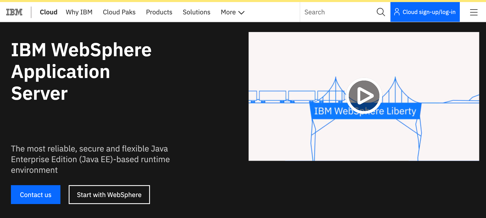
WebSphere Applicaiton Server是一种强大的Web应用服务器，基于Java的应用环境、建立、部署和管理网站应用。
Microsoft IIS
微软的IIS是一种灵活，安全易管理的Web服务器，从流媒体到Web应用程序，IIS提供了图形化的管理界面，用于配置和管理网络服务。
IIS是一整套Web组件，包含了Web服务器，FTP服务器，SMTP服务器等常用的网页浏览、文件传输，邮件新闻等功能。
缺点是只能运行在Windows平台，还得购买商业化的操作系统。
Nginx（选它）
Nginx是俄罗斯人Igor Sysoev（伊戈尔·塞索耶夫）开发的一款高性能的HTTP和反向代理服务器。
Nginx以高效的epoll、kqueue、eventport作为网络IO模型，在高并发场景下，Nginx能够轻松支持5w并发连接数的响应，并且消耗的服务器内存、CPU等系统资源消耗却很低，运行非常稳定。
当前想让nginx支持5万并发，甚至百万级的并发，都是可以的，但需要做很多的优化工作，如
想至少支持5万并发的基本调优
1.服务器内存、CPU硬件支持，如8核16线程、32G内存的服务器
2.磁盘使用SSD、或者购买至少15000转的SAS企业级硬盘，做成RAID 0
3.安装光纤网口
4.使用linux系统，如centos7，优化内核参数，对TCP连接的设置
5.优化nginx.conf中并发相关的参数，如等
worker_processes 16;
worker_connections 50000;
6.未完待续，nginx百万级并发优化篇的知识..面试造火箭必备
国内著名站点，新浪博客、网易、淘宝、豆瓣、迅雷等大型网站都在使用Nginx作为Web服务器或是反向代理服务器。
为何选择Nginx
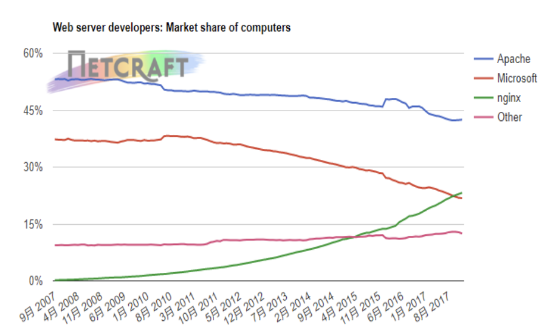
在互联网的快速普及，全球化、物联网的迅速发展，世界排名前3的分别是Apache、IIS、Nginx，而Nginx一直在呈现增长趋势。
在线自动生成nginx配置文件
https://www.digitalocean.com/community/tools/nginx?global.app.lang=zhCN
可以自由选择所需的应用，生成nginx配置作为参考。
第一章、nginx介绍
1.nginx是什么
1.nginx是一个高性能的HTTP服务器、反向代理服务器。
2.主要特点
- 开源源代码
- 高性能，并发性能、处理tcp连接性能极高
- 可靠，服务稳定，得到了全世界的验证。
2.为什么选nginx
1.每一家公司都会用到nginx
2.技术成熟，是企业最常见且必须的工具
3.适用于任意架构，单机环境，集群环境，微服务架构、云原生架构等
3.nginx重要特性
1.官网直接获取源码，免费用，讲道理这种高性能的软件，是很贵的。
2.高性能，官网提供测试数据，性能残暴，1秒内能支持5万个tcp连接
3.消耗资源很低，有数据证明在生产环境下3万左右的并发tcp连接，开启10个nginx进程消耗不到150M。
4.有能力可以自己对nginx进行二次开发，如淘宝的tengine。
5.模块化管理，nginx有大量的模块（插件），运维根据公司的业务需求，按需编译安装设置即可。
模块插件是为了提供额外的功能，如
- url重写，根据域名、url、客户端的不同，转发http请求到不同的机器
- https证书的支持
- 支持静态资源压缩
- 支持热部署、无须重启，更新配置文件
- 支持二次开发新插件
4.企业用nginx做什么
1.提供静态页面展示，网页服务
2.提供多个网站、多个域名的网页服务
3.提供反向代理服务（结合动态应用程序）
4.提供简单资源下载服务（密码认证）
5.用户行为分析（日志功能）
第二章、nginx架构
nginx是多进程架构，当启动nginx会使用root创建master进程，由master进程创建多个worker进程。
[root@yuchao-tx-server ~]#ps -ef|grep nginx |grep -v grep
root 8382 1 0 5月01 ? 00:00:00 nginx: master process /usr/sbin/nginx
wordpre+ 16566 8382 0 5月01 ? 00:00:02 nginx: worker process
1.master主进程原理
1.启动时检查nginx.conf是否正确，语法错误；
2.根据配置文件的参数创建、且监控worker进程的数量和状态；
3.监听socket，接收client发起的请求，然后worker竞争抢夺链接，获胜的可以处理且响应请求。
4.接收运维超哥发送的管理nginx进程的信号，并且将信号通知到worker进程。
5.如果运维超哥发送了reload命令，则读取新配置文件，创建新的worker进程，结束旧的worker进程。
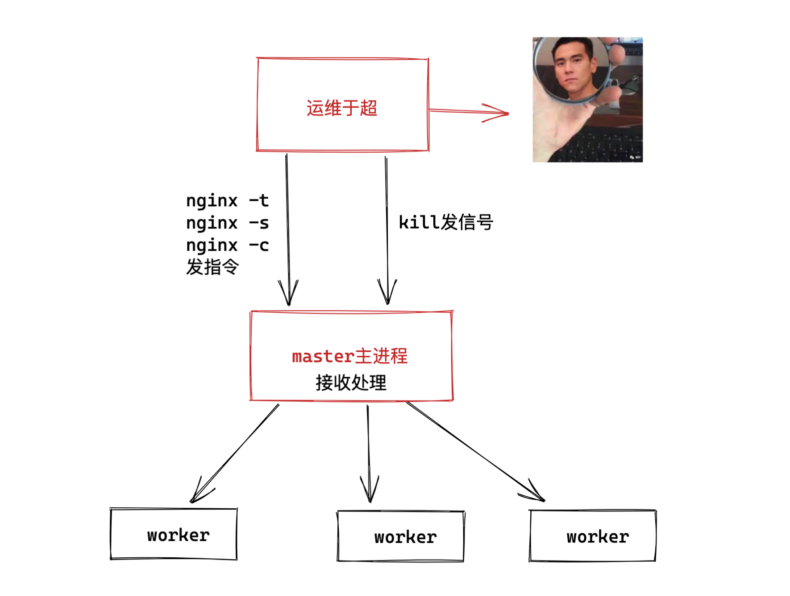
2.worker工作进程原理
1.实际处理client网络请求的是worker
2.master根据nginx.conf决定worker的数量
3.有client用户请求到达时，worker之间进程竞争，获胜者和client建立连接且处理用户请求；
4.接收用户请求后，若需要代理转发给后端，则后端处理完毕后接收处理结果，再响应给用户
5.接收并处理master发来的进程信号，如启动、重启、重载、停止。
2.nginx进程间通信图
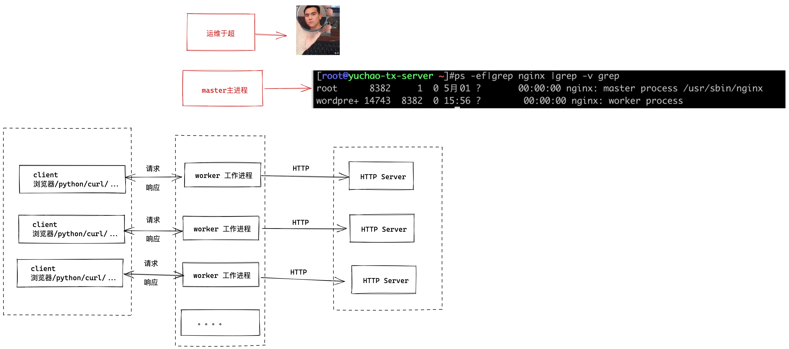
3.nginx处理http请求
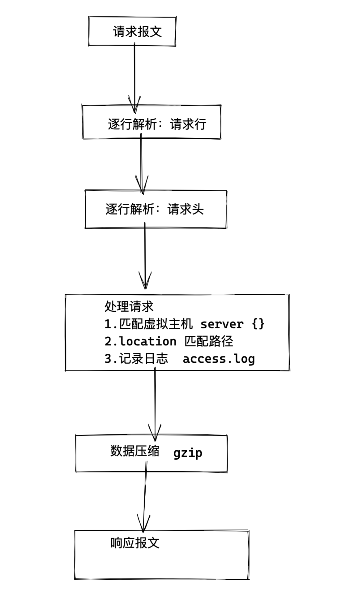
4.nginx重要模块
[root@yuchao-tx-server ~]#nginx -V 该命令可见nginx已安装的模块，也是默认比较重要的模块
--prefix=/usr/share/nginx
--sbin-path=/usr/sbin/nginx
--modules-path=/usr/lib64/nginx/modules
--conf-path=/etc/nginx/nginx.conf
--error-log-path=/var/log/nginx/error.log
--http-log-path=/var/log/nginx/access.log
--http-client-body-temp-path=/var/lib/nginx/tmp/client_body
--http-proxy-temp-path=/var/lib/nginx/tmp/proxy
--http-fastcgi-temp-path=/var/lib/nginx/tmp/fastcgi
--http-uwsgi-temp-path=/var/lib/nginx/tmp/uwsgi
--http-scgi-temp-path=/var/lib/nginx/tmp/scgi
--pid-path=/run/nginx.pid
--lock-path=/run/lock/subsys/nginx
--user=nginx
--group=nginx
--with-compat
--with-debug
--with-file-aio
--with-google_perftools_module
--with-http_addition_module
--with-http_auth_request_module
--with-http_dav_module
--with-http_degradation_module
--with-http_flv_module
--with-http_gunzip_module
--with-http_gzip_static_module
--with-http_image_filter_module=dynamic
--with-http_mp4_module
--with-http_perl_module=dynamic
--with-http_random_index_module
--with-http_realip_module
--with-http_secure_link_module
--with-http_slice_module
--with-http_ssl_module
--with-http_stub_status_module
--with-http_sub_module
--with-http_v2_module
--with-http_xslt_module=dynamic
--with-mail=dynamic
--with-mail_ssl_module
--with-pcre
--with-pcre-jit
--with-stream=dynamic
--with-stream_ssl_module
--with-stream_ssl_preread_module
--with-threads
--with-cc-opt=-O2 -g -pipe -Wall -Wp,-D_FORTIFY_SOURCE=2 -fexceptions -fstack-protector-strong --param=ssp-buffer-size=4 -grecord-gcc-switches -specs=/usr/lib/rpm/redhat/redhat-hardened-cc1 -m64 -mtune=generic
--with-ld-opt=-Wl,-z,relro -specs=/usr/lib/rpm/redhat/redhat-hardened-ld -Wl,-E
模块解释
Nginx模块名称 模块作用
ngx_http_access_module 四层基于IP的访问控制，可以通过匹配客户端源IP地址进行限制
ngx_http_auth_basic_module 状态页，使用basic机制进行用户认证，在编译安装nginx的时候需要添加编译参数--withhttp_stub_status_module，否则配置完成之后监测会是提示语法错误
ngx_http_stub_status_module 状态统计模块
ngx_http_gzip_module 文件的压缩功能
ngx_http_gzip_static_module 静态压缩模块
ngx_http_ssl_module nginx 的https 功能
ngx_http_rewrite_module 重定向模块，解析和处理rewrite请求
ngx_http_referer_module 防盗链功能，基于访问安全考虑
ngx_http_proxy_module 将客户端的请求以http协议转发至指定服务器进行处理
ngx_stream_proxy_module tcp负载，将客户端的请求以tcp协议转发至指定服务器处理
ngx_http_fastcgi_module 将客户端对php的请求以fastcgi协议转发至指定服务器助理
ngx_http_uwsgi_module 将客户端对Python的请求以uwsgi协议转发至指定服务器处理
ngx_http_headers_module 可以实现对头部报文添加指定的key与值
ngx_http_upstream_module 负载均衡模块，提供服务器分组转发、权重分配、状态监测、调度算法等高级功能
ngx_stream_upstream_module 后端服务器分组转发、权重分配、状态监测、调度算法等高级功能
ngx_http_fastcgi_module 实现通过fastcgi协议将指定的客户端请求转发至php-fpm处理
ngx_http_flv_module 为flv伪流媒体服务端提供支持
模块官网
官网文档
https://nginx.org/en/docs/ 所有模块都在这了
nginx核心功能都以插件的形式，是否安装插件，开启该功能决定是否有各种功能。
核心模块如下
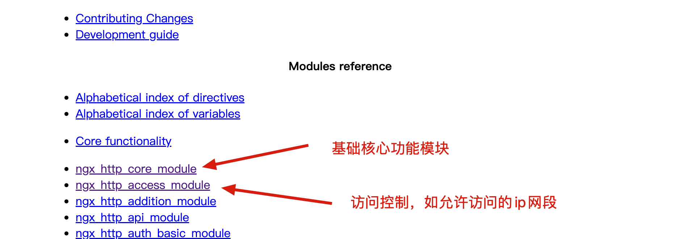
重定向模块
公司使用php作为后端，nginx反向代理php的模块
反向代理模块
负载均衡模块
第三章、nginx部署实践
1.安装方式
- 源码编译
- 版本随意、安装复杂、定制化强、升级繁琐
- epel仓库
- 版本较低，安装简单，定制化差、默认配置较多，不易读
- 官网仓库
- 版本最新，安装简单，配置易读
编译安装
2.编译安装
官网
https://nginx.org/en/docs/configure.html
超哥的文档
1.创建用户
groupadd www -g 666
useradd www -u 666 -g 666 -M -s /sbin/nologin
2.安装依赖环境
[root@web-9 ~]#yum install pcre pcre-devel openssl openssl-devel zlib zlib-devel gzip gcc gcc-c++ make wget httpd-tools vim -y
3.下载源码 https://nginx.org/download/，且解压缩
mkdir /yuchao-linux-data/ -p ;wget -O /yuchao-linux-data/nginx-1.19.0.tar.gz https://nginx.org/download/nginx-1.19.0.tar.gz
cd /yuchao-linux-data/ && tar -zxf nginx-1.19.0.tar.gz
开始编译，编译三部曲来了
0.查看编译参数帮助信息
[root@web-9 /yuchao-linux-data/nginx-1.19.0]#./configure --help
1.编译参数
[root@web-9 /yuchao-linux-data/nginx-1.19.0]#./configure --user=www --group=www --prefix=/opt/nginx-1-19-0 --with-http_stub_status_module --with-http_ssl_module --with-pcre
2.编译安装
[root@web-9 /yuchao-linux-data/nginx-1.19.0]#make && make install
创建软连接
[root@web-9 /yuchao-linux-data/nginx-1.19.0]#ln -s /opt/nginx-1-19-0/ /opt/nginx
[root@web-9 /yuchao-linux-data/nginx-1.19.0]#
[root@web-9 /yuchao-linux-data/nginx-1.19.0]#ll -d /opt/nginx
lrwxrwxrwx 1 root root 18 May 7 17:12 /opt/nginx -> /opt/nginx-1-19-0/
默认的nginx安装目录
[root@web-9 /yuchao-linux-data/nginx-1.19.0]#ls /opt/nginx
conf html logs sbin
3.检查语法
[root@web-9 /opt]#/opt/nginx/sbin/nginx -t
nginx: the configuration file /opt/nginx-1-19-0/conf/nginx.conf syntax is ok
nginx: configuration file /opt/nginx-1-19-0/conf/nginx.conf test is successful
4.启动nginx
先不着急配置PATH，先绝对路径启动
-c 参数指定配置文件启动
[root@web-9 /opt]#/opt/nginx/sbin/nginx -c /opt/nginx/conf/nginx.conf
[root@web-9 /opt]#ps -ef|grep nginx
root 50976 1 0 17:26 ? 00:00:00 nginx: master process /opt/nginx/sbin/nginx -c /opt/nginx/conf/nginx.conf
www 50977 50976 0 17:26 ? 00:00:00 nginx: worker process
root 50979 45214 0 17:26 pts/0 00:00:00 grep --color=auto nginx
5.停止nginx
[root@web-9 /opt]#/opt/nginx/sbin/nginx -s stop
6.测试nginx
[root@web-9 /opt]#/opt/nginx/sbin/nginx -c /opt/nginx/conf/nginx.conf
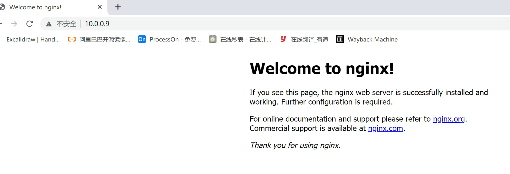
yum源安装
epel源安装就不操作了
1.配置阿里云yum epel源
2.yum install nginx -y
1. 官网nginx源
官网文档
https://nginx.org/en/linux_packages.html#RHEL-CentOS
于超老师的文档
1.安装yum工具包
sudo yum install yum-utils
2.设置yum仓库
最新稳定版，线上用这个
cat > /etc/yum.repos.d/nginx.repo << 'EOF'
[nginx-stable]
name=nginx stable repo
baseurl=http://nginx.org/packages/centos/$releasever/$basearch/
gpgcheck=1
enabled=1
gpgkey=https://nginx.org/keys/nginx_signing.key
EOF
最新开发版，但是并不稳定
cat > /etc/yum.repos.d/yuchao-nginx.repo << 'EOF'
[nginx-mainline]
name=nginx mainline repo
baseurl=http://nginx.org/packages/mainline/centos/$releasever/$basearch/
gpgcheck=1
enabled=0
gpgkey=https://nginx.org/keys/nginx_signing.key
EOF
3.yum安装的nginx服务
yum clean all
yum install pcre pcre-devel openssl openssl-devel zlib zlib-devel gzip gcc gcc-c++ make wget httpd-tools vim nginx -y
4.启动nginx
注意，当前有nginx进程吗？
[root@web-9 /opt]#/opt/nginx/sbin/nginx -s stop
[root@web-9 /opt]#systemctl start nginx
2.测试nginx版本
[root@web-9 /opt]#curl -I 127.0.0.1
HTTP/1.1 200 OK
Server: nginx/1.20.2
Date: Sat, 07 May 2022 09:40:44 GMT
Content-Type: text/html
Content-Length: 612
Last-Modified: Tue, 16 Nov 2021 15:03:30 GMT
Connection: keep-alive
ETag: "6193c842-264"
Accept-Ranges: bytes
3.yum自动设置了PATH
yum自动设置了PATH
[root@web-9 /opt]#which nginx
/usr/sbin/nginx
4.测试访问nginx
[root@web-9 /opt]#echo '超哥带你学linux' >> /usr/share/nginx/html/index.html
[root@web-9 /opt]#curl 127.0.0.1
<!DOCTYPE html>
<html>
<head>
<title>Welcome to nginx!</title>
<style>
body {
width: 35em;
margin: 0 auto;
font-family: Tahoma, Verdana, Arial, sans-serif;
}
</style>
</head>
<body>
<h1>Welcome to nginx!</h1>
<p>If you see this page, the nginx web server is successfully installed and
working. Further configuration is required.</p>
<p>For online documentation and support please refer to
<a href="http://nginx.org/">nginx.org</a>.<br/>
Commercial support is available at
<a href="http://nginx.com/">nginx.com</a>.</p>
<p><em>Thank you for using nginx.</em></p>
</body>
</html>
超哥带你学linux
注意两个版本的nginx管理
1.nginx配置文件的读取
两个版本的nginx，使用的配置文件区别
yum安装的
[root@web-9 /opt]#nginx -t
nginx: the configuration file /etc/nginx/nginx.conf syntax is ok
nginx: configuration file /etc/nginx/nginx.conf test is successful
源码编译的
[root@web-9 /opt]#/opt/nginx/sbin/nginx -t
nginx: the configuration file /opt/nginx-1-19-0/conf/nginx.conf syntax is ok
nginx: configuration file /opt/nginx-1-19-0/conf/nginx.conf test is successful
指定配置文件检测语法
[root@web-9 /opt]#/opt/nginx/sbin/nginx -t -c /opt/nginx/conf/nginx.conf
nginx: the configuration file /opt/nginx/conf/nginx.conf syntax is ok
nginx: configuration file /opt/nginx/conf/nginx.conf test is successful
2.nginx命令小结
编译安装的
1.查看帮助信息
/opt/nginx/sbin/nginx -h
2.查看语法
/opt/nginx/sbin/nginx -t # 检测默认路径配置文件
/opt/nginx/sbin/nginx -t -c /opt/nginx/conf/nginx.conf # 指定配置文件检测语法
3.重载配置文件
/opt/nginx/sbin/nginx -s reload # 重载默认路径下的配置文件
4.停止服务（注意nginx命令的路径）
/opt/nginx/sbin/nginx -s stop
yum安装的
/usr/sbin/nginx -t
systemctl start/restart/reload/stop nginx
第四章、Nginx配置文件
1.重要文件
[root@web-9 /opt]#rpm -ql nginx
/etc/logrotate.d/nginx # nginx日志切割配置文件
/etc/nginx/conf.d # 子配置文件目录
/etc/nginx/conf.d/default.conf # 默认配置文件模板
/etc/nginx/fastcgi_params # 翻译nginx的变量为php可识别的变量
/etc/nginx/mime.types # 支持的媒体文件类型
/etc/nginx/nginx.conf # nginx主配置文件
/etc/nginx/uwsgi_params # 翻译nginx变量为python可识别的变量
/usr/lib/systemd/system/nginx.service # systemctl管理nginx的脚本
/usr/sbin/nginx # nginx命令
/usr/share/nginx/html # 网站根目录
/var/log/nginx # nginx默认日志目录
2.查看已安装nginx的详细信息
[root@web-9 /etc/nginx]#nginx -V
nginx version: nginx/1.20.2
built by gcc 4.8.5 20150623 (Red Hat 4.8.5-44) (GCC)
built with OpenSSL 1.0.2k-fips 26 Jan 2017
TLS SNI support enabled
configure arguments: 。。。
3.配置文件理解
nginx.conf是纯文本类型的文件
[root@web-9 /etc/nginx]#file /etc/nginx/nginx.conf
/etc/nginx/nginx.conf: ASCII text
nginx以区块的形式组织各区域的配置参数
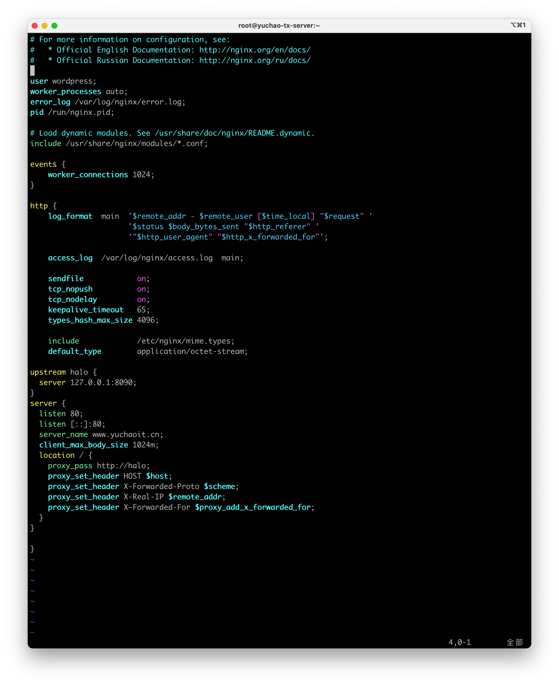
nginx配置文件主要区分三大区域
- coremodule
- 核心模块
- EventModul
- 事件驱动模块
- HttpCoreModule
- http内核模块
4.核心模块配置
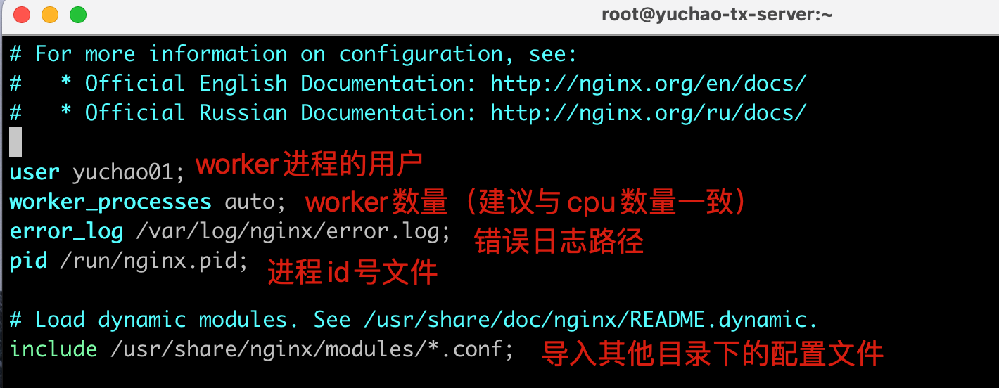
5. 事件驱动配置
这部分关于nginx并发性能优化
6. http区域
网站的配置都在这了
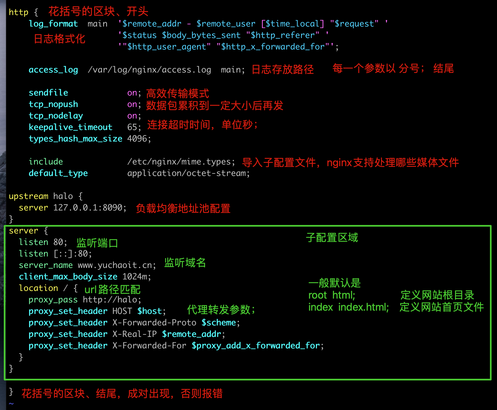
7.小结
主要区域块如下
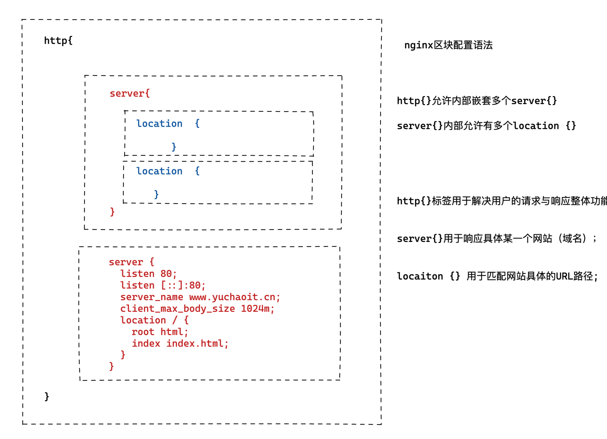